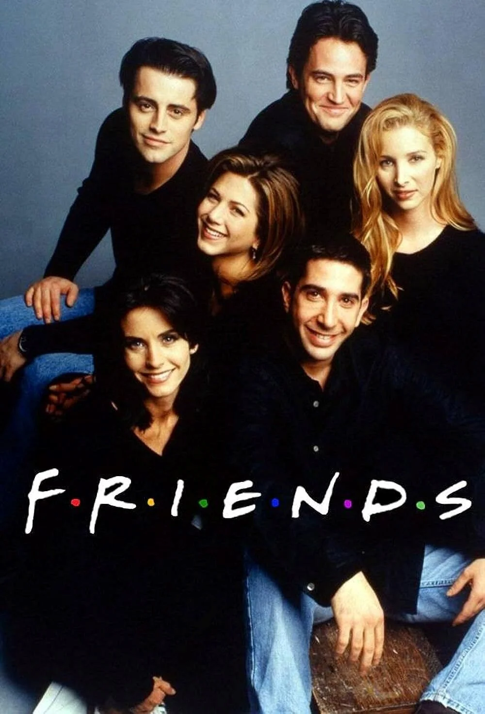

|  |
FriendsFriends (Türkçe: Arkadaşlar), David Crane ve Marta Kauffman tarafından yaratılmış Amerikan yapımı sitcom türünde bir dizidir. 22 Eylül 1994 ile 6 Mayıs 2004 tarihleri arasında NBC'de yayımlanan dizi, on sezon sürdü. Manhattan'da yaşayan bir grup arkadaşın hayatı üzerinde dönen dizi, Warner Bros. Television şirketine bağlı Bright/Kauffman/Crane Productions yapımıdır. Yönetici yapımcıları Kevin S. Bright, Marta Kauffman ve David Crane'dir. |